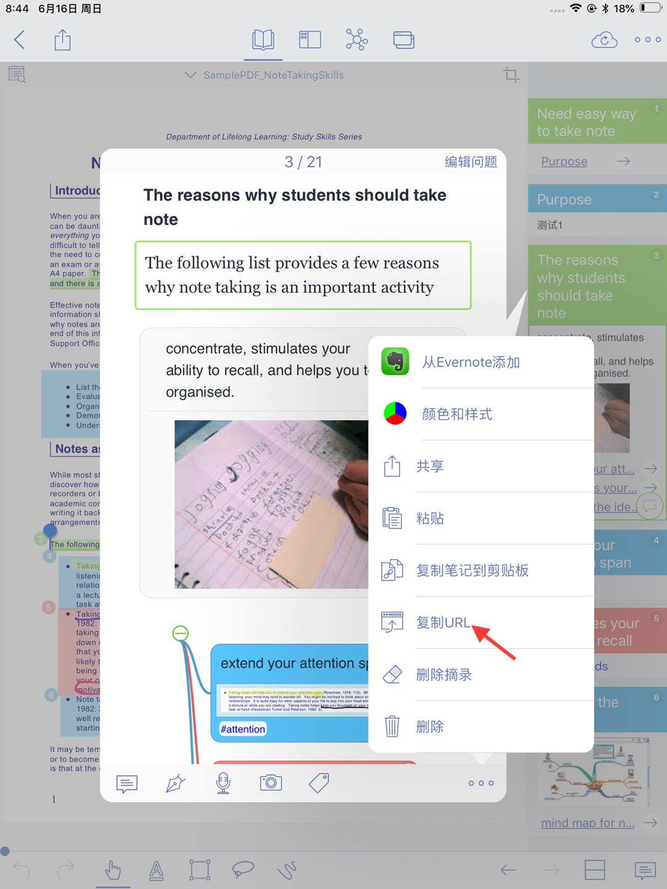

New and Clean UI Completely redesigned
Improved performance and Running more smoothly Support both Document Reading mode & Study Reading mode. Excerpts & Note-taking·Enhanced Handwriting & apple-pencil support. ·Support TextBox on PDF. ·Support direct text-typing & sketching when editing note cards. ·Support Auto OCR when excerpting on scanned PDFs.
Emphasis & Cloze·Support direct emphasis in powerful Emphasis mode both on PDF or Outline. ·Support auto convert emphasis to Cloze in CardDeck. ·Support creating Image-Occlusion flashcards.
Multi-Documents·Support both document tabs & split views to switch between documents.
Outline·Improved search and displaying keywords in results. ·Improved styles.